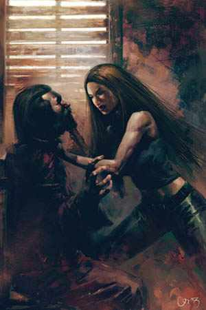
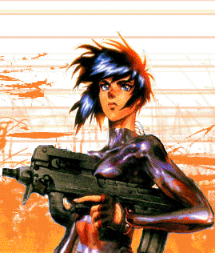
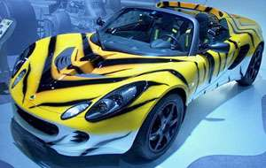

Jméno: Jasmine Amirah Saharazad - Nova
vìk: 25 (23),
zivotopis a denik runu
karma (dobra): 1 (12), pocitadlo (volna): 1 (4), teamova [Vlad]: 5, bodycount: 9
Y: 500.000 na hulce
Y: 1.000.000 (zlate pruty) + 300.000 (v papirovych) : safehouse Dark Secret

ATRIBUTY:
tìlo: 4
rychlost: 6
síla: 3
charisma: 6
inteligence: 5
vùle: 4
esence: 3,95
body index: 2 - 1,5
reakce: 5(7)
INICIATIVA: 5+k6 (7+2k6)
bojové rezervy: 7
matrixové rezervy: 11
alergie : prùmìrná : iod
DOVEDNOSTI:
boj bezezbranì: 6
støelba: 6
kanony: 1
deckování: 6
boj se zbraní - tìlní implantáty: 7
etiketa - luxusní konkubína: 7
kmerstina (kambodzstina): 2
WARE:
èipjack (0,2)
datajack (0,2)
antikoncepèní implantát (0)
tajný implntát (0,15 beta)
synaptický urychlovaè (0,3 bioware)
zata¾itelné ¹pièáky (0,15 bioware)
jedové ¾lázy (0,15 bioware) : velice silne afrodisiakum
sexuální implantát (0,3)
upravené feromony (0,6 bioware)
VÝBAVA:
pdf soubor s obrazky a popisy výbavy a ware - cca 600kilo
Do letadla:
Obleceni - vetsinou velice draha kuze v barve zaschle krve:
- Zrcadlovky (termo, infra, zvetsovani:3, smartlinkII, tlumic oslneni)
- Smlouva s EuroWagonem (platinova) = luxusni hodinky
- Velice upnute kozene kalhoty a top (3/2), ala Trinity
- (nebo modré policejní kapsáèe, bílý nátìlník, tezka kozena bunda, tenisky(3/2))
- Plá¹» nebo ko¾ená bunda podle teploty a nalady (+2ut. zbraním)
- Vysoke ale meke motorkarske mestske boty se stribrnou spickou
- V kapse:
- Oslepujici vybojka (ut. 12, 5m=+4 k cc, 10m=+3 k cc ...20m=+1k cc, ochrana=-50% cc)
- 3x traumaticky derm
- 5x stimulacni derm: 6
- 5x tisici derm: 6
- Kredithulka - ve skrytem pouzdre v rukavu
- Bezprste rukavice z meke "kuze" ladici s poulicnim stylem (9V omrac.)
Kovovy-kozeny kufrik na heslo
- Telefon
- Kapesní sekretáøka
- Prázdné datové èipy (1000mp)
- Leatherman Wave - nástrojový nù¾
- Zapalovac, damske cigarety s chuti a vuni hrebicku
- cyberdeck

Vetsi zavazadlo
- Tázer (str. 103): ut:5(7), 4v, PA, 1OV(omráè.) Vni. smartgun, pouzdro
- Domaci zupan
- Pohodlne i "pracovni" spodni pradlo
- 5x Elegantni vecerni saty v mirne exotickem stylu
- Toaletni potreby, licidla a parfemy (schovane 3 ampulky Tutovky)
Na akci:
- Browning Hi-Power Practical : ut.6(8), 10z, PA, 9M. v.smartgunII,pouzdro
- HK-AG-36(+kostka ke strelbe), 8M;PA/D/A;35(z), smartgunII, granatomet
- Bezprstove kevlarove rukavice (9V omrac)
- 5x oslelpujici granat (ut.6, 5L(1metr), 5m=+6 k cc., 10m=+5 k cc... 30m=+1 k cc, ochrana= -50% cc)
- modré policejní kapsáèe, bílý nátìlník, modrá bunda, tenisky (3/2)
- Takticka vesta s rukávy ut.5 (5/3) + kevlarové chránièe pøedloktí (0/+1) + na zadech pancerovana kapsa na deck (5/4)
- Takticka Helma (2/3): gas maska, smartlink II, termo/infra, zvetsovani:3, vysilacka (nebo headsetu + støelecké brýle - smartlinkII, termo, infra, zvetsovani:3, tlumic oslneni)
- Kotvickova puska + 100m mikrolana + katalizator
- Sedak, osma, 4xHMS
- 5x svetlice
- mikrobaterka
- 3x traumaticky derm
- 5x stimulacni derm: 6
- 5x tisici derm: 6
- Bankovky 2x 2500Y
- Deck
- 2x35 obyc samopalove munice (sumky na veste)
- 2x10 obyc pistolove munice (sumky na opasku)
- 5x mikrogranat v kapsach na nohavicich
V Dark Secret
- Skotsky tesak - posveceny, postribreny
- 100 kusu postribrene samopalove munice
- Y: 1.000.000 (zlate pruty) + 300.000 (v papirovych) + 200.000 (na hulce)
Dopravni prostredky
SALADIN
ovl:4, rych:45/120, plá¹»:5, pancíø:3, sign:4, pilot:4
- dodavka Vlada Hromady a Langusty Garnatha
plyn/nafta, misto pro 2 lidi i se spanim, venkovní závìs na motorku, radar, rig, 2x dalkove ovladani - jedno moje, jedno langusty, zabezpeèení: 6
stabilizaèní jednotka deluxe, GPS, satelitní pøipojení na trix, vysílaèka, telefon, 2x nouzové zavazadlo, mikrotechnicke naradi, stolek s zidli na deckovani, detektor ¹tìnic: 6
ROADSTER TIGER
ovl: 3, rych: 55/125, Plast: 2,
pancir: 3(8 pro sedacky), signatura: zakladni: 1, zvuk: 4, teplo: 6, autopilot: 0, sensory: 3

- roadster s nahonem na 4 kola, pridana forsaz a custom uprava
motoru, system proti ukradeni: 9, 2 sportovni odpruzene a pancerovane sedacky (+5 k armoru, pro osoby v nich sedici), vystuzena kola (prasknou az pri M), aktivni termalni maskovani, aktivni tlumic zvuku, misto max. pro dva lidi,
zadny kufr, na rozdil od obrazku, ma auto i strechu
(forsaz rych= 75/150, ale 2k6 za kazdou minutu)
(1= -10% speed | |2= -20% speed| |3= -30% speed| |4= -40% speed, +1 ovl.| |5= -50% speed +2 ovl.| |6= motor je kompletne nefunkcni)
Fuchi Cyber-4
Zaroven s Vladem Hromadou. upraven do verze kompakt-outdoor notebook i s obrazovkou v cerne barve, polepeny napisy free Tibet (maskuje datajackovy vstup), Brother..., I love Me!. Pri beznem pouzivani funguje jako normalni pocitac s Windows 20066. Po pripojeni do neuralu, nutne heslo, zalozene na uzivatelove neuralnim rozhrani + xx znaku UTF-16 vstupu
HARDWARE:
persona: 6
odolnost: 3
ram: 500
hdd: 1500
náklad: 20
IO: 20
PERSONA:
lid(tìlo): 6
únik: 6
maskování: 6
sensory: 6
(specialita decku, reflexy: 3)
PROGRAMY:
útok: 4
medik(poè.úsp.=vyléè.ètverce)(144mp-degen.): 6
klon(poè.úsp.=kryté.ètverce)(108mp-degen): 6
proèítání(hledá v datech)(36mp): 6
de¹ifrování(108mp): 6
analyza(info o uzlu)(108mp): 6
maskovací únikový teleport(72mp): 6
maskování(pøi vstupu do uzlu)(108mp): 6
kontakty
Obecne:
- Timmy - nikdy jej nevidela, ale zna jej od Vlada
- spol Ziva Zvirata - kontakt na leteckou prepravni krabici
- dohazovaèka cyberware - vladuv kontakt, vzdy pomocí netu a tajné schránky
- mikrotechièka-elfka - vladuv kontakt pomocí netu a tajné schránky
- Ko»átko a její team - vladuv kontakt, uzka spoluprace ohledne Pentax
- Invisible Galery web Node
- Archibald - trpaslík, dohazovaè - zbranì a výbava, London
- Maxim Oblukov - mikrotechnická dílna v Rusku (i cyberdecky), 2-3 hodiny
letadlem odkudkoli z Evropy
- eBony Clide - dohazoval zachranu Slotrhauze v Edinburgu
- Elfi obcodnik se zlatem, sperky a obecne cenostmi (Lon)
- Elfi prodavacka kosmetiky (Lon)- prodava take jedy (mj. i tutovku) a afrodisiaka
Spoluhraci:
- Garnath Langusta - Prawitz
- Nicolas Slotrhauz - GoTo od Vlada
- Chose Armando - kytarista s muznou zbrani
- Habat Kabut - ork s lukem a kuzi cernou jako ebenove drevo
- Maote - indian, saman, vlkodlak, zabijak
- Vlado - manzel, konecne stadium heroinove a matrixove zavislosti, velice schopny programator
- Tamavenk - troll, schopny opravar vseho, upravoval obe firemni pevnosti
Skotsko:
- Ludova tunningova dilna ve Skotsku - luda a jeho kamaradi, co dokazou ridit vsechno co ma kola a taky to dat do poradku, jen jsou trosku sileni
- Laura a jeji pritelkyne - hospodska, ktera mi dodava ruzne...ehm, utisujici prostredky, stejne jako Vladovi. Dobry zdroj informaci o okoli Skotske pevnosti. Armandova milenka
- Starosta okoli Skotske pevnosti - nutne udrzovat cca 100tisici "na vystavbu a rozvoj vesnice" rocne
- Ucetni KRYSA - neduveryhodny, ale schopny chlapy, ktery nam pomohl vybudovat nadnarodni zbrojni trh
Mrtve kontakty:
Safehouses
Zamecek Hradec Kralove - dozvedela se od Langusty (VYSOKA)
Dark Secret - bordel, kde drive pracovala, zaplaceny pokoj, kde je ulozeno par jejich veci (predplaceno na 10 mesicu)(LUXUSNI)
Skotska pevnost
Kambodzska pevnost